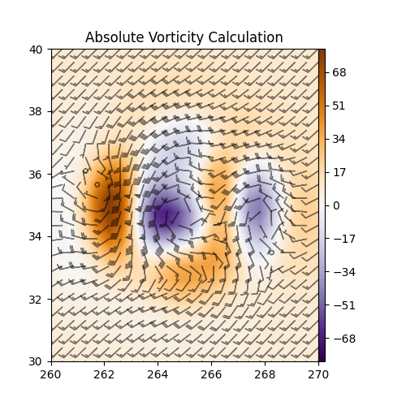

Note
Click here to download the full example code
Absolute Vorticity#
Use metpy.calc.absolute_vorticity.
This example demonstrates the calculatation of absolute vorticity using the example xarray Dataset and plotting using Matplotlib.
import matplotlib.pyplot as plt
import metpy.calc as mpcalc
from metpy.cbook import example_data
# load example data
ds = example_data()
# Calculate the vertical vorticity of the flow
avor = mpcalc.absolute_vorticity(ds.uwind, ds.vwind)
# start figure and set axis
fig, ax = plt.subplots(figsize=(5, 5))
# plot and scale absolute vorticity by 1e5
cf = ax.contourf(ds.lon, ds.lat, avor * 1e5, range(-80, 81, 1), cmap=plt.cm.PuOr_r)
plt.colorbar(cf, pad=0, aspect=50)
ax.barbs(ds.lon.values, ds.lat.values, ds.uwind, ds.vwind, color='black', length=5, alpha=0.5)
ax.set(xlim=(260, 270), ylim=(30, 40))
ax.set_title('Absolute Vorticity Calculation')
plt.show()
Total running time of the script: ( 0 minutes 0.313 seconds)